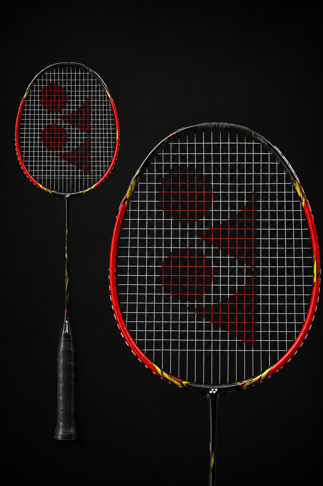

Yonex's "Voltric Orange" primarily refers to the highly popular Voltric Lite 40i. It is a head-heavy, lightweight badminton racket that blends aggressive smashing power with quick maneuverability, making it ideal for beginners and intermediate players.